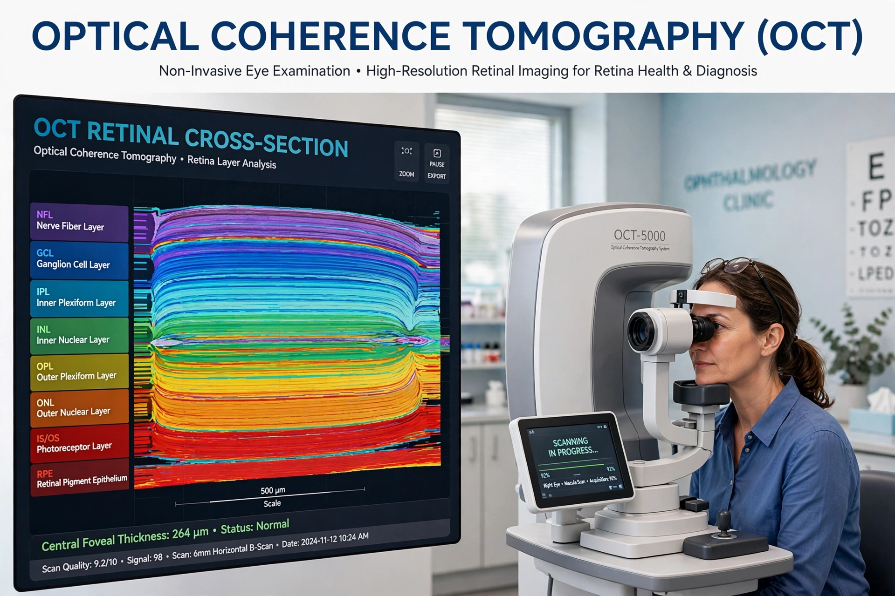

Optical coherence tomography (OCT) is a non-invasive imaging technique that uses low-coherence light interferometry to capture micrometre-resolution, two- and three-dimensional images from within optical scattering media, most importantly living tissue. It is analogous to ultrasound imaging except that it measures back-scattered light rather than sound, achieving axial resolutions of about 1–15 μm — roughly a hundred times better than clinical ultrasound — at the cost of limited penetration depth (1–3 mm in most tissues).
| Optical coherence tomography | |
|---|---|
 OCT B-scan of a healthy retina | |
| Principle | Low-coherence interferometry |
| First demonstrated | 1991 (Huang et al., MIT) |
| Main use | Ophthalmology; intravascular imaging; dermatology |
A broadband light source is split in an interferometer (typically a Michelson configuration) between a reference mirror and the sample. Echoes of back-scattered light from successive depths in the tissue interfere with the reference beam only when path lengths match within the coherence length, yielding a depth profile (A-scan); sweeping the beam laterally builds cross-sections (B-scans) and volumes. Modern systems use spectral-domain (Fourier-domain) detection, measuring all depths simultaneously, or swept sources, enabling speeds of hundreds of thousands of A-scans per second.
OCT revolutionised ophthalmology: retinal OCT is now the standard of care for diagnosing and monitoring age-related macular degeneration, diabetic macular oedema, glaucoma and epiretinal membranes, and for judging response to anti-VEGF therapy. Intravascular OCT guides coronary stent placement; further uses include dermatology, gastroenterology (endoscopic probes), developmental biology, art conservation and industrial inspection. Variants include OCT angiography, which images retinal blood flow without dye, and polarization-sensitive and elastographic OCT.